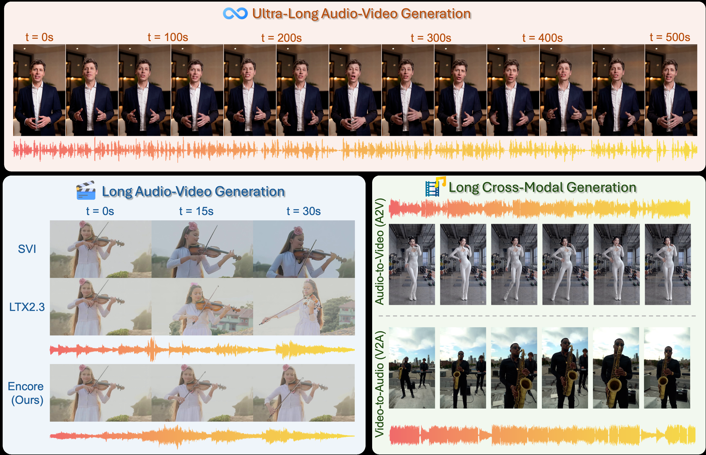
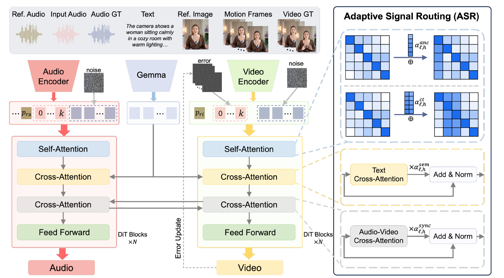

One 500-second audio-video generated by Encore from a single reference image — identity, speech and scene stay stable throughout.

Encore enables ultra-long audio-video generation (top), outperforms SVI and LTX-2.3 on long generation (bottom-left), and supports long cross-modal generation: audio-to-video and video-to-audio (bottom-right).
Abstract
Existing audio-video generation methods produce well-synchronized clips but are limited to short durations, while long-video generation methods extend duration through chunk-based iterative synthesis yet lack audio entirely. Generating long audio-video jointly is fundamentally harder than either task alone: each chunk must simultaneously maintain video temporal coherence, audio temporal coherence, and cross-modal synchronization, whose conditioning signals enter the model through different pathways. In this work, we present Encore for long-form synchronized audio-video generation. Our key insight is to factor this challenge into: (1) local continuity handled by iterative generation with explicit cross-chunk context propagation, and (2) global consistency enforced via reference audio-video signals with shifted position embedding. Building on this design, we propose Adaptive Signal Routing (ASR), which introduces learnable attention biases within self-attention and learnable residual scales on cross-attention outputs, enabling the model to adaptively modulate the influence of each conditioning signal. Trained end-to-end for joint audio-video generation, Encore also supports infinite-length audio-to-video and video-to-audio synthesis at inference by conditioning on the ground-truth modality throughout the denoising process. Experiments on our extended VerseBench for long audio-video evaluation demonstrate that Encore significantly outperforms existing methods in both generation quality and temporal coherence.
Method

Overview of Encore. ASR adds learnable attention biases in self-attention (anchor / continuation routing) and learnable residual scales on cross-attention outputs (semantic / synchronization routing), on top of the frozen LTX-2.3 backbone.
Long-form synchronized audio-video generation. Encore generates unlimited-duration audio-video with speech and high-resolution visuals, one ~5 s chunk at a time, from a single reference image and text prompts.
Adaptive Signal Routing (ASR). Learnable per-layer, per-head attention biases and residual scales explicitly model the heterogeneous roles of anchor, continuation, semantic and synchronization signals.
New long audio-video benchmark. We extend VerseBench to 30-second structured prompts; Encore achieves by far the lowest error accumulation (ΔAS 0.02 / ΔID 0.07, ~3× better than the strongest baseline) and the best identity preservation and synchronization.
Quantitative Results
Method
MSc ↑
MSm ↑
AS ↑
ID ↑
CS ↑
CE ↑
CU ↑
PC ↓
PQ ↑
LSE-C ↑
LSE-D ↓
AV-A ↑
ΔAS ↓
ΔID ↓
SVI
1.79
99.46
0.55
0.81
-
-
-
-
-
-
-
-
0.06
0.22
Helios
1.22
99.03
0.59
0.77
-
-
-
-
-
-
-
-
0.09
0.23
OVI
3.41
98.30
0.50
0.72
0.30
5.38
5.87
2.62
6.25
1.04
11.66
0.64
0.08
0.32
LTX-2.3
2.61
99.44
0.45
0.72
0.23
6.25
7.24
4.52
7.65
1.40
10.94
0.76
0.06
0.26
Encore (Ours)
2.51
99.47
0.46
0.86
0.34
5.63
6.53
2.97
6.95
2.36
10.34
0.88
0.02
0.07
Long audio-video generation on our extended VerseBench (30 s samples). SVI and Helios are video-only methods. Bold = best, underline = second best.
User study. In a blind pairwise study with 10 participants, Encore was preferred over OVI in 100% of comparisons across all criteria; over LTX-2.3, 80% (audio) and 100% (video & synchronization); and over SVI / Helios on video quality in 80% / 100% of comparisons.
Comparisons
Long (30 s) audio-video generation compared against SVI, Helios, OVI and LTX-2.3. Helios and SVI are video-only baselines (silent). Please listen with sound on.
Encore (Ours)
LTX-2.3
OVI
Helios video-only
SVI video-only
Encore (Ours)
LTX-2.3
OVI
Helios video-only
SVI video-only
Encore (Ours)
LTX-2.3
OVI
Helios video-only
SVI video-only
Encore (Ours)
LTX-2.3
OVI
Helios video-only
SVI video-only
Audio-to-Video (A2V)
Given an audio track and a reference image, Encore synthesizes a matching video of arbitrary length — a single model, no fine-tuning.
Demo 1 · 225 s
Demo 2 · 225 s
Demo 3 · 225 s
Demo 4 · 225 s
Portrait demo · 65 s
Video-to-Audio (V2A)
Given a silent video, Encore generates semantically aligned, temporally synchronized audio — no fine-tuning required.
More Results
Watch the full supplementary video on YouTube — ultra-long generation up to 500 s, long A2V and V2A results, and more. Open on YouTube
BibTeX
@article{pan2026encore,
title = {Encore: Infinite Audio-Video Generation with Adaptive Signal Routing},
author = {Pan, Shaohua and Chen, Junbao and He, Shengyi and Xue, Jingfeng and
Tao, Wen and Feng, Haocheng and Fan, Siming and Pan, Dongwei and
Yang, Yi and He, Wei and Zhou, Hang},
journal = {arXiv preprint arXiv:TODO},
year = {2026}
}